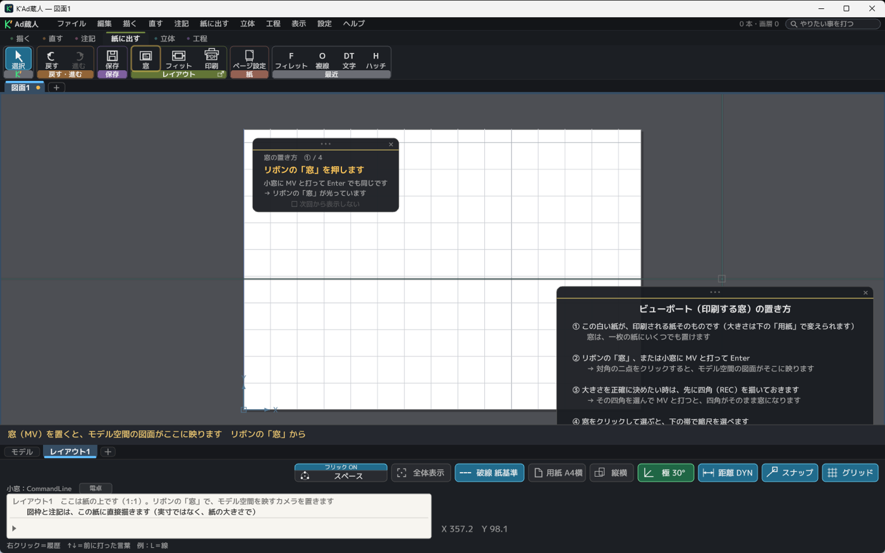
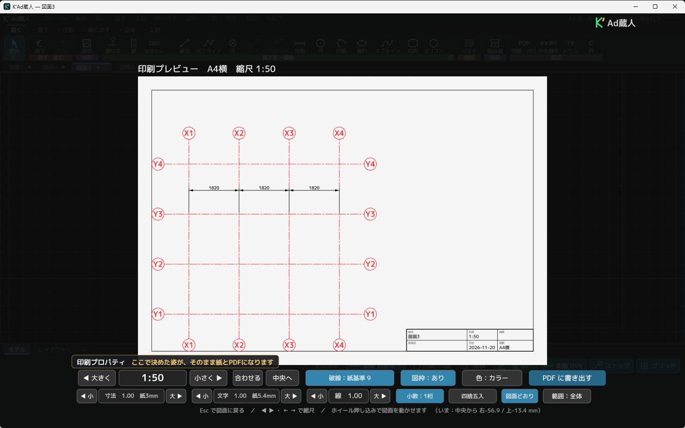
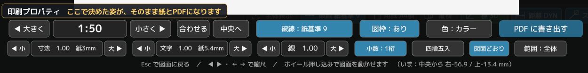

14. Printing (putting it on paper)
Printing in K'Ad = make a PDF, then print it
K'Ad does not send directly to a printer. With [Print] on the ribbon, decide the sheet, scale and colour while looking at the paper, then [Export to PDF].
Open that PDF and print it on your home printer or at a convenience store.
Layouts (paper space)

Below the drawing area there is a second row of tabs = Model | Layout1.
- Model = where you draw at full size. There is only one. (The drawing itself is always here.)
- Layout = paper. Here you are looking at the sheet you will print, at its actual size. (A sheet of paper on which you arrange windows showing the model.)
Press the Layout tab and a white sheet appears. The grey around it is the desk.
On this sheet everything is 1:1 = type 10 and it is 10 on the paper.
The bottom left of the sheet is the origin (0,0). Draw the title block, the border and your notes here.
※ This is what other CAD programs call paper space.
If you press [Print] while a layout is open, no preview appears.
— because this screen is already the preview. Press it and it becomes paper as it stands.
(Printing from the model still opens the preview as before.)
What you drew on the sheet, and the windows too, are saved together in the DXF.
Open it in another CAD program and the same sheets appear under the same names.
On paper, the tool guides you one step at a time
Move to a Layout tab and a small card appears on the white sheet.
It tells you one step only. Once you have done it, the card moves on by itself.
- ① Press 窓 (Viewport) on the ribbon → 窓 lights up amber on the ribbon
- ② Click two opposite corners on the sheet
- ③ Click the window to select it → the window itself lights up
- ④ On the bar below: scale, the area shown, lock → the bar at the bottom of the screen lights up
Whatever is lit is what you press next. It is the same colour as the amber line on the card.
- The card can be dragged by its bar (the ・・・ at the top); it remembers where you put it.
- × = close it for now (go back to Model and come to a sheet again and it returns).
- □ 次回から表示しない (do not show again) = it stops appearing. To bring it back, use レイアウトの講師 (Layout guide) in Settings (OPTIONS).
※ Once you have learnt it, this card is of no use to you. When you forget, come back to this manual.
Viewports (MV): the cameras you place on the paper, showing the drawing
Move to a Layout tab and press 窓 (Viewport) on the ribbon, or type MV → Enter.
(The paper tools — viewport, fit, print — are on the Paper tab.)
Click two opposite corners on the sheet and a window opens there.
The moment you place it, the whole of the model space is shown in it, at a scale that fits.
The window you placed is left selected, and the Viewport panel opens by itself (so you can go straight on to choose a scale; close it with × if you do not want it).
- The frame of a window is a pale blue dotted line with corner brackets. Think of it as the frame in a camera's viewfinder. It is a guide on the screen and is not printed. If you want a rectangle printed as a border, draw one separately with REC. ※ Place a window on top of a border and the two frames sit in the same place. Put your finger there and it says “Tab: 重なり 1/2 【ポリライン】｜窓” (overlap 1 of 2: polyline | window). Press Tab to reach the one underneath (there is no need to delete anything).
- Select a window and a bar appears below = the quick scales, and the lock. ← → step one sensible scale at a time (including 1:75 and 1:125, which are not on the bar). For an odd value on neither, type VPSCALE 75 (= 1:75) in the Command Line.
- Grab and move (middle button, or Space + drag) = the place shown moves. * The wheel always zooms the paper, even over a viewport. So the scale never goes wrong from an accidental turn.
- Lock = locks the composition and the scale (press again to unlock).
* The drawing inside a viewport cannot be edited here. Edit it on the Model tab. A viewport is a "camera", so the idea is not to touch what is shown but to adjust the camera's settings (scale, place shown). * What other CADs call "entering the viewport" is, in K'Ad, the single move "select the viewport". You never lose track of which space you are in.
Notes inside a window are mostly adjusted for you
When something is shown in a window, everything on paper that is to be read is corrected to a readable size automatically.
- Dimensions: the arrows, text, gaps and extensions appear at the paper millimetres their author intended.
- Text, multiline text and leaders: text meant as “3.5 on paper” (a height of 20 or less) stays the same size on paper, and readable, in a window of any scale. Text drawn in the site convention (paper height × scale denominator, giving heights like 100) is divided back by the scale, and comes out readable on paper as well.
- The dash spacing is automatic too (paper-based = the same spacing in every window).
= In model space you simply type 3.5, as always. The window knows the scale, so nobody has to multiply by the denominator in their head.
And each window can be fine-tuned: the Viewport panel (VP)
It opens by itself when you place a window. Once closed, VP → Enter opens it again at any time.
It lists the windows on this sheet, so you can take them one at a time and adjust how they look.
- Click a row = that window is selected (it lights up on the drawing too).
- Scale: press the value field and type it on the spot (50 = 1:50; 1:75 and 2:1 are understood as written). Press 一覧 (List) and the shelf of scales opens, ready to be pressed. ◀ ▶ step one sensible scale at a time as well (the same answers as the bar below).
- Dimensions / text / leaders: the multiplier laid on top of the automatic correction, adjustable separately for each.
- Arrow: the dimension arrows alone can be fine-tuned further (on top of the dimension multiplier). Does it read as an arrow, or as a stick that has simply grown? In the end that is decided by eye. Take hold of the slider and the drawing changes as you move it. Press the “×1.00” at the right and you can type a number on the spot (expressions too: 1/2). 1.00 = leave it automatic. To change them all together, type VPNOTE 1.5 in the Command Line. ※ The “text” multiplier applies to multiline text as well (the wrapping width moves with it, so the shape of the lines is not spoiled).
- Lock: locks the composition and the scale.
- Clip the area shown: this can be pressed from the panel too (you enclose it with two opposite corners inside the window, the same as from the bar below).
- Dashes: paper-based ⇄ as-drawn can be switched from the panel too. ※ This switch applies to the whole drawing (not to this window alone).
◆ What neither the automatic correction nor the multipliers touch (= the shape of the drawing itself)
- Lines, circles, polylines, hatch patterns. What the scale decides, we do not change.
* The original drawing (model space) is not touched at all. A drawing drawn at 1:1 stays as it is; only "how it looks when shown in that viewport" changes. So the same drawing can be put on a 1:50 sheet and on a 1:100 sheet, each in a readable form.
These multipliers are saved in the DXF, so they survive being reopened (they have no effect in other CAD programs).
Clipping what is shown: only grid lines X1–X2 and Y1–Y2
When you place a window, it shows the whole drawing.
When you want only a certain part, you can clip what it shows.
- Click the window to select it → press 範囲を絞る (Clip) on the bar below, or in the Viewport panel
- Click two opposite corners inside the window (right-click to give up) → only what you enclosed is shown. A mesh shows the area while you are enclosing it.
- To undo it: the bar now reads 範囲：絞り中 (clipped), so press it again to go back to the whole (one press of U also works).
* Anything touching the range is shown (a beam that straddles it, a column standing on a grid line). If only what is completely inside were shown, straddling members would vanish and the drawing would look broken. What sticks out is cut by the viewport frame = the neighbour is not seen.
* The original drawing (model space) is not touched at all. The range belongs to the viewport. Showing a different range of the same drawing on a different sheet — that is free too.
The clip is saved in the DXF too, so it survives being reopened (it has no effect in other CAD programs).
* Inside a viewport things shrink by the scale, so thin members may look squashed into one line on screen. (At 1:20, the double line of a φ48.6 pipe is 2.4 mm on paper = a few dots on screen.) The lines have not disappeared. Zoom in and they separate, and on paper they come out properly as two lines at the scaled spacing.
The dash spacing inside a window
Dashed and chain lines follow whichever side the 破線 (dashes) tag on the bar below is set to.
- Paper-based (the usual choice) = the same readable spacing on paper, in a window of any scale. A sheet printed from the model and a sheet printed through a window show the same dashes.
- As-drawn = the appearance of the spacing the drawing carries (LTSCALE) is reduced along with the scale.
Cutting part of the model out and pasting it onto the paper
Besides showing it through a window (a camera), there is a way to bring the drawing itself onto the paper.
It is the way to work once the drawing has settled and you are assembling the sheet.
- ① On the Model tab, select what you want to take. All of it (right-click → Select all) or just a part (enclose it with a window) — either is fine.
- ② Copy (Ctrl+C, or right-click → Copy).
- ③ Move to the Layout tab.
- ④ Paste (Ctrl+V, or right-click → Paste). → A bar appears below = the quick scales. The tool guesses a scale that fits the paper and chooses it.
- ⑤ You can choose the scale again = press the bar / step with ← → / type PASTESCALE 75 (= 1:75) in the Command Line.
- ⑥ Click where it goes. You can go on placing as many as you like (right-click to finish).
* Only "round" scales are offered. That is so you can lay a scale rule on the printed sheet and read real sizes (at 1:47.9999 there is no face to lay it on). The position, on the other hand, is free = it has nothing to do with the scale rule.
Matching the scale rule on your desk
Scale rules carry different combinations of graduations from maker to maker. One rule carrying 1/75, 1/125, 1/150, 1/200, 1/250 and 1/500 1/20, 1/25, 1/50, 1/75, 1/100, 1/150 (for smaller building work) 1/100, 1/200, 1/250, 1/300, 1/400, 1/500 (for larger building work)
So “the correct six” is not something the tool can decide.
Tell it the graduations on the rule you actually have. Settings (the cog) → 紙と縮尺 (Paper and scale) → 私の三角スケール (My scale rule) For example: 1:75,1:100,1:125 (separated by commas)
- The faces on the bar, the ones you press, become those graduations.
- The ← → stepping takes those values too.
- Empty it and it returns to the original eight (1:1 to 1:200).
※ It accepts 75 on its own, 1:75, or 2:1 (an enlarging scale).
※ The scales that were there to begin with are not removed (so that 1:100 never suddenly disappears).
Dimension figures come out at the model's true size. (Paste at 1:5 and the lines become a fifth as long, but the figures written on them stay as they were.)
The difference from a window
- A window = a camera. Correct the model and what is shown is corrected with it. The drawing inside cannot be touched.
- Cutting out and pasting = it becomes an object on the paper. Its tie to the model is cut, but in exchange you can move it freely on the sheet (erase it, move it, add notes).
* Viewports while the drawing is still changing; cut-outs when you compose the sheet after it has settled — that is how to choose.
When the notes you pasted are too large or too small
Type NOTESCALE 1.5 → Enter (×1.5). NOTESCALE 1 returns them to their original size.
Only the size of the text, multiline text, leaders and dimensions pasted on the paper changes.
* The original drawing (model space) is not touched at all. The shapes (lines, circles) do not change either.
Title blocks and borders: called from the shelf, fitted to the sheet
Five of them are on the shelf in the Blocks box from the start. 図枠A4横 (A4 landscape, 297×210) / 図枠A4縦 (A4 portrait) / 図枠A3横 / 図枠A2横 / 図枠A1横
Each holds the outer border, the inner border (20 mm binding edge, 10 mm elsewhere), the centring marks and the title block.
(The form of JIS Z 8311. Only A1 has a 20 mm margin all round.)
- To place one: 部品箱 (Blocks box) on the ribbon → ◀▶ to the 図枠 (Borders) section → press the card → click on the sheet. Where you press becomes the bottom left of the border. (Right-click when you have finished placing, or press another tool.)
- To fit it exactly to the sheet: click the border you placed to select it, then press フィット (Fit) on the ribbon, or type FIT → Enter. Its position and size are matched to fill the sheet (one press of U undoes it). ※ The shape is not changed. If the border has a different proportion, what is left over becomes margin. ※ It works the same way on a border that came with someone else's drawing.
- To write into the title block (drawing name, scale, date…), select the border and open it with X (explode). The text inside becomes ordinary drawing text, so you can double-click it and retype it.
- To put your company's border on the shelf, select it, make it a block with B, and register it with + in the Blocks box (Chapter 11). Once it is in, you can call it from any drawing.
As many sheets as you like
Press the + at the right end of the space tabs and one more sheet appears.
You can keep an A3 assembly drawing and an A4 detail side by side in the same drawing.
(The sheet size and the orientation — landscape or portrait — are chosen per sheet. A new sheet starts with the same size and orientation as the one before it.)
- To rename one: click the tab of the sheet you are on a second time. The spine becomes the field, so type and press Enter (Esc to give up). Names you can find later — “Plans”, “S=1:50 details” — are the kind ones.
- To close one: the × on the tab of the sheet you are on. ※ A closed sheet does not come back with U (sheets live outside the drawing's history). That is why it always asks, once. Not one line of the drawing (the model) is lost.
- When there is only one sheet, no × appears (the last one cannot be closed).
Drawings made in other CAD programs open with all their sheets, however many, if they carry them.
(Which sheet each object belongs to is written by the drawing itself. In an old drawing that does not say, everything goes onto the frontmost sheet, and the screen tells you so.)
Opening the preview

[Print] on the ribbon, or PDF or PLOT → Enter in the command box.
The screen becomes “the drawing laid on the paper”. Esc = back to the drawing.
Sheet size and scale

- The sheet button = choose A4, A3 and so on.
- The orientation (landscape / portrait) is chosen in the ページ設定 (Page Setup) panel. Landscape = the long side is the width (A4 gives 297×210) / portrait = the short side is the width (210×297). ※ The 用紙 (Sheet) tag along the bottom always names the orientation too (用紙 A4縦, A4 portrait). ※ While you are in a layout, both that tag and the Page Setup panel change the sheet size of the layout you are looking at (it is held separately from the model's).
- The scale button = choose a sensible scale such as 1:50.
- [Fit] = chooses, once, on the spot, the largest round scale that fits the paper. The scale is one per drawing. A new drawing is 1:50; an opened drawing gets it from its size when opened, and after that it does not move until you change it (so that the size of text and dimensions you place from now on never changes by itself).
- 中央へ (Centre) = brings the drawing back to the middle of the sheet.
- The drawing on the paper can be moved with the same hands as when drawing (pan and zoom).
Printing a window of the drawing
Press 範囲 (Window) → the first corner of what you want printed → the opposite corner.
= Only the inside of that window goes on the paper. [Fit] picks the round scale that fits the window. "Range" → "Whole drawing" once more brings it back.
Grooming, on the paper
- The size of dimensions and text = tidied with a multiplier (the original is unchanged).
- Decimal digits and rounding mode = these change the dimension style itself. Dimensions on the drawing screen show the same figures (the measured values do not change).
- The title block = type TITLE or 表題 in the Command Line. It asks in order for the author, the drawing number, the drawing name and the date (an empty Enter = leave it; - = back to automatic).
When it becomes paper
[Export to PDF] = decide where to put it in the save window (on the Web: the save dialog; in browsers without one, it goes to Downloads).
The PDF comes out with Japanese intact. It can be printed on a home printer or at a convenience store.
Correct the manual there and this one is corrected the same day.
The pictures show the Windows version (retaken in November 2026). On the Mac version, Ctrl is ⌘ and Alt is ⌥.